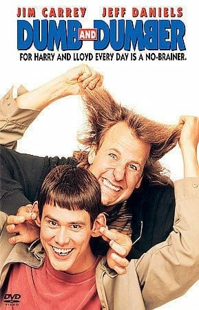
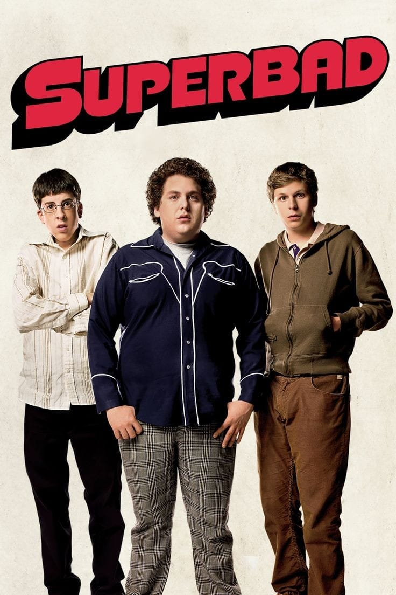
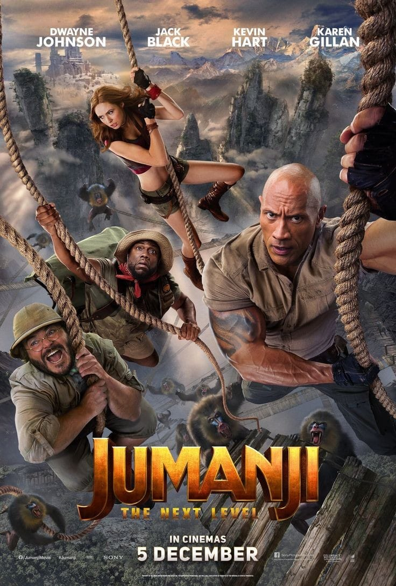

Cek Toko Sebelah
Erwin memiliki karir gemilang di usia muda, dan kekasih cantik yang tak kalah sukses, Natalie. Tapi semua jadi pelik saat Koh Afuk yang kesehatannya makin memburuk, ingin mewariskan toko sembakonya kepada Erwin. Hal ini menimbulkan kecemburuan Yohan dan Istrinya.
Orang Kaya Baru

Apa jadinya bila sebuah keluarga yang selama ini hidup pas-pasan, tiba- tiba mendapat harta berlimpah? Pastinya mereka kaget, bingung, senang dan mulai membeli barang-barang yang sebelumnya mungkin hanya ada di mimpi mereka.
Dumb and Dumber

Film yang rilis pada era 90-an ini termasuk dalam salah satu film komedi terbaik sepanjang masa yang wajib ditonton. Dibintangi oleh Jim Carrey dan Jeff Daniels, film DUMB AND DUMBER ini sukses membuat penontonnya tertawa dengan komedi slapstick mereka loh. Bahkan, setelah 10 tahun berlalu, tepatnya pada tahun 2014, muncul DUMB AND DUMBER TO sebagai sekuelnya yang masih dibintangi oleh kedua aktor tersebut.
Superbad

Film ini sempat masuk dalam nominasi film komedi terbaik Hollywood di tahun 2000-an. Bercerita tentang pengalaman Seth bersama Evan. Mereka berperan sebagai dua orang pelajar tidak populer dan juga kutu buku di sekolahnya. Film SUPERBAD ini sungguh mengundang gelak tawa karena sepanjang jalan cerita banyak hal-hal konyol yang mereka lakukan.
Jumanji

Diangkat dari film animasi dengan judul sama, JUMANJI tahun 2017 merupakan versi live action. Namun berbeda dengan JUMANJI versi pertama, versi yang baru ini bukan hewan atau hal unik yang masuk ke dunia manusia, namun seseorang yang masuk ke dalam dunia game berupa JUMANJI. Film ini bercerita tentang petualangan empat sahabat yang secara tak sengaja masuk ke dalam dunia video game. Untuk dapat keluar dari sana, mereka harus menyelesaikan permainan dan tidak boleh kalah. Sebab, jika kalah, mereka akan terjebak di sana sampai ada yang bisa menyelamatkan mereka. Ada banyak sekali aksi serta tingkah konyol yang dilakukan para karakter di film JUMANJI ini, bahkan membuat kalian tertawa terbahak-bahak.